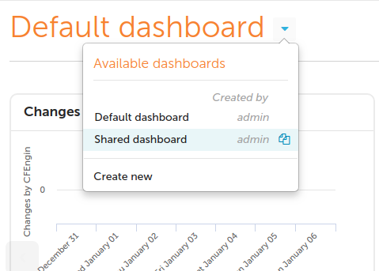
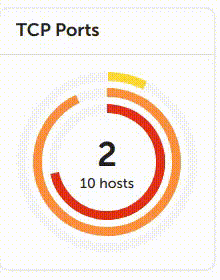
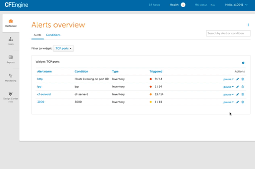
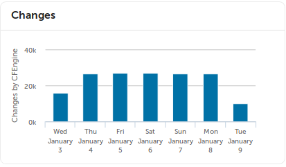
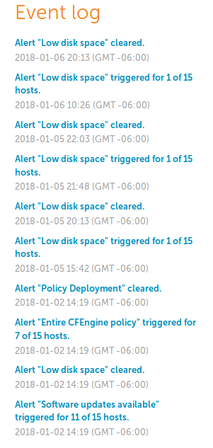
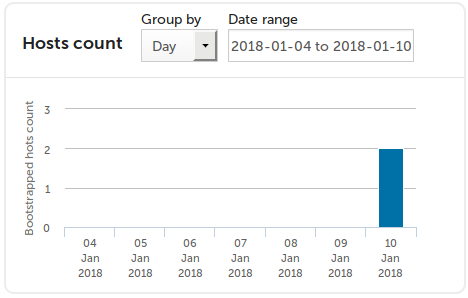
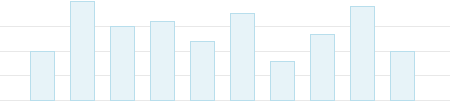
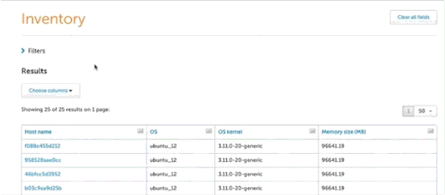
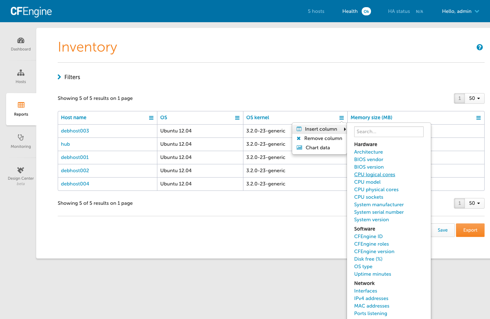

User Interface
The challenge in engineering IT infrastructure, especially as it scales vertically and horizontally, is to recognize the system components, what they do at any given moment in time (or over time), and when and how they change state.
CFEngine Enterprise's data collection service, the cf-hub collector, collects,
organizes, and stores data from every host. The data is stored primarily in a
PostgreSQL database.
CFEngine Enterprise's user interface, the Mission Portal makes that data available to authorized users as high level reports or alerts and notifications. The reports can be designed in a GUI report builder or directly with SQL statements passed to PostgreSQL.
Dashboard
The Mission Portal dashboard allows users to create customized summaries showing the current state of the infrastructure and its compliance with deployed policy.
The dashboard contains informative widgets that you can customize to create alerts. All notifications of alert state changes, e.g. from OK to not-OK, are stored in an event log for later inspection and analysis.
Make changes to shared dashboard

Create an editable copy by clicking the button that appears when you hover over the dashboard's row.
Alert widgets

Alerts can have three different severity level: low, medium and high. These are represented by yellow, orange and red rings respectively, along with the percentage of hosts alerts have triggered on. Hovering over the widget will show the information as text in a convenient list format.

You can pause alerts during maintenance windows or while working on resolving an underlying issue to avoid unnecessary triggering and notifications.

Alerts can have three different states: OK, triggered, and paused. It is easy to filter by state on each widget's alert overview.
Find out more: Alerts and Notifications
Changes widget
The changes widget helps to visualize the number of changes (promises repaired)
made by cf-agent.

Event log
The event log on the dashboard is filtered to show only information relevant based on the widgets present. It shows when alerts are triggered and cleared and when hosts are bootstrapped or decommissioned.

Host count widget
The hosts count widget helps to visualize the number of hosts bootstrapped to cfengine over time.

Hosts and Health
CFEngine collects data on promise compliance, and sorts hosts according to 3 different categories: erroneous, fully compliant, and lacking data.
Find out more: Hosts and Health
Reporting
Inventory reports allow for quick reporting on out-of-the-box attributes. The attributes are also extensible, by tagging any CFEngine variable or class, such as the role of the host, inside your CFEngine policy. These custom attributes will be automatically added to the Mission Portal.

You can reduce the amount of data or find specific information by filtering on attributes and host groups. Filtering is independent from the data presented in the results table: you can filter on attributes without them being presented in the table of results.

Add and remove columns from the results table in real time, and once you're happy with your report, save it, export it, or schedule it to be sent by email regularly.

Find out more: Reporting
Follow along in the custom inventory tutorial or read the MPF policy that provides inventory.
Sharing
Dashboards, Host categorization views, and Reports can be shared based on role.
Please note that the logic for sharing based on roles is different than the
logic that controls which hosts a given role is allowed access to data for. When
a Dashboard, Host categorization, or report is shared with a role, anyone having
that role is allowed to access it. For example if a dashboard is shared with the
reporting and admin roles users with either the role reporting or the role
admin are allowed access.
For example:
user1has only thereportingrole.adminhas theadminrole.
If the admin user creates a new dashboard and shares it with the reporting
role, then any user (including user1 ) having the reporting role will be
able to subscribe to the new dashboard. Additionally the dashboard owner in this
case admin also has access to the custom dashboard.
Monitoring
Monitoring allows you to get an overview of your hosts over time.
Find out more: Monitoring
Settings
A variety of CFEngine and system properties can be changed in the Settings view.
Find out more: Settings